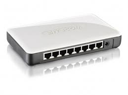

Nella tecnologia delle reti informatiche, uno switch e' un dispositivo di rete o nodo interno di rete che si occupa di commutazione a livello datalink del modello ISO/OSI cioe' di indirizzamento e instradamento al interno di reti locali attraverso indirizzi MAC, inoltrando selettivamente i frame ricevuti verso un preciso destinatario grazie a una corrispondenza univoca porta-indirizzo.